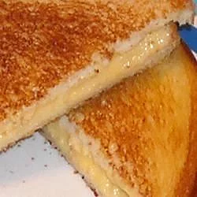

Mike's Favorite Grilled Cheese

Description
This is a recipe for the ultimate lunchtime classic, Grilled Cheese!
It speaks for itself, see below for ingredients and step-by-step guide!
Recipe provided by Tracie Brantley on allrecipes.com.
Ingredients
- 2 slices bread
- 2 tablespoonds butter, divided
- 2 slices processed American cheese
Steps
- Heat a small skillet to medium-high heat. Spread a thin layer of butter on one
side of both bread slices; place one slice bread, buttered side down, in hot skillet.
- Immediately place both cheese slices on bread and cover with second bread slice, butter side up.
When first side is browned, turn over and brown other side. Remove from heat and let cool 2 to 3
minutes before serving. Enjoy!